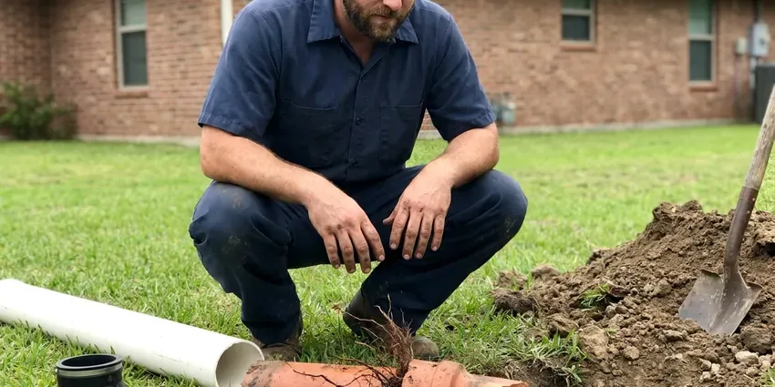

Sewer Repair in Plymouth, MN
Clay, cast iron, Orangeburg or PVC, CNV Plumbing repairs main sewer lines across Plymouth, MN after we see the problem on video.
- Spot Repair or Full Line Swap
- Tested Before Backfill
- Licensed Minnesota Plumbing Contractor
- 811 Called Before Every Dig

Get the Sewer Line on Camera in Plymouth, MN
Call (612) 712-9569 and describe what the drains are doing. We will set up a video inspection.
Sewer Repair in Plymouth, MN for Clay, Cast Iron and Plastic Lines
CNV Plumbing repairs the main sewer line that runs from your house to the public main or septic tank in Plymouth, MN. The first tool out is the camera. The camera head carries a sonde, so we can mark the depth and location of every crack, root mass or sag on the surface before we talk about price. After that, you get a written price for every way to fix it.
Our expertise includes:
- Open-Trench Section Replacement
- Cleanout Installation at the Foundation
- Trenchless Cured-in-Place Lining

Additional Plumbing Repair Services in Plymouth, MN
We offer expert plumbing repair services across Plymouth, MN to stop leaks, clear blockages, and keep every fixture working the way it should.


Customers
Why Choose CNV Plumbing for Sewer Repair in Plymouth, MN?
Our quotes list the footage, the pipe material, the method and the price. There is no vague catch-all charge. If we find something unexpected once the trench is open, like a second break a few feet past the first, you hear about it and see it before we go further.
- Right-Sized Fixes, We replace one bad joint when one joint is the problem, not the whole lateral.
- Full Equipment, Camera, locator, jetter and excavation gear ride on every sewer truck.
- Written Quotes, Footage, material, method and price are all on paper before the dig starts.
Citywide Coverage
Homes on slab, homes with basements and homes on crawlspaces all route their sewer differently. We work on all three. The camera shows where the building drain leaves the foundation in your Plymouth house, so we know before we dig whether the trouble is inside or outside the footprint.
Experienced Team
The person who runs the camera is a plumber, not a salesperson. That matters more than it sounds. When the tech says a line has another ten years in it, you are hearing someone who fixes pipe for a living, not someone on commission.
Safety-First Approach
Trenches deeper than five feet get shoring or a trench box, as federal trench safety rules require. Walls collapse fast. Our crew sets the protection before anyone climbs in, and spoil piles stay back from the edge so they do not load the trench walls.
Trusted Certified Plymouth Plumbing Services Professionals
At CNV Plumbing, we are proud to offer certified plumbing services throughout Plymouth, MN. Credentials matter in this trade. Our plumbers hold recognized industry credentials, and they follow strict safety and quality rules on every repair, installation and maintenance call we run.
Call Us Now PHCC Plumbing Contractor Recognition
PHCC Plumbing Contractor Recognition Better Business Bureau (BBB) Accreditation
Better Business Bureau (BBB) Accreditation Angi Certified Pro
Angi Certified Pro ISO 9001 Quality Management Certification
ISO 9001 Quality Management CertificationSewer Repair Options for Plymouth, MN Homes
Root Intrusion Repair in Plymouth, MN
Cutting roots treats the symptom. Fixing the joint treats the cause. After clearing the line, we look at each rooted joint on camera and decide between a short sectional liner, a full liner or cutting in new pipe, depending on how many joints are affected and how far apart they sit. One or two joints is a small job. A line rooted end to end is a lining or replacement job.

After-Hours Sewer Repair in Plymouth
Main lines like to fail on holidays. We still answer. An after-hours call gets a tech with a cable machine and a camera, which is enough to restore flow in most cases and to find out whether the trouble is a blockage or a structural break. If it is structural, we schedule the dig for the earliest safe window. We avoid digging blind at night near gas and electric lines.
Sewer Vent Pipe Repair in Plymouth, MN
A plugged vent makes drains gurgle and traps run dry. Sewer gas follows soon after. Bird nests, leaves and ice can block a roof vent, and older galvanized or cast iron vent stacks crack inside the walls where nobody sees them, which is why we look at the vent whenever the lateral checks out fine. We clear it from the roof or replace the damaged section.
Restaurant and Retail Sewer Repair in Plymouth
Restaurants, retail centers and multifamily buildings load a lateral far beyond a single house. Grease is the usual culprit. We jet the line, camera it, and repair the weak section with options that limit how long you are closed, such as overnight work or temporary bypass pumps that keep the building running. A two-way cleanout usually goes in at the same time.
Emergency Sewer Repair in Plymouth
Raw sewage on a basement floor is not a next-week problem. Our phone is answered after hours. The first goal on an emergency call is to get the line flowing, usually with a cable or jetter, and then camera it to find out whether you have a clog or a structural failure that will back up again tomorrow. Sometimes the permanent fix waits for daylight. Until then, we tell you which fixtures are safe to use.
Sewer Pipe Replacement Options in Plymouth, MN
Replacement makes sense when the camera shows failures every few feet. Spot repairs will not keep up. We price open trench replacement, pipe bursting and full-length lining side by side for your Minnesota property, with the footage, depth and surface restoration spelled out for each one. Depth, access and what sits on top of the line decide it.
Cracked and Broken Pipe Repair in Plymouth
Clay and cast iron crack from settling soil, tree roots and vehicles parked over the line. The crack lets soil in and sewage out. We excavate at the marked spot, cut out the damaged length and install new Schedule 40 PVC with shielded stainless couplings rated for the transition between materials, then test the repair with water and video before closing the hole. Figure on a single day for a typical spot repair.

Root Intrusion Removal in Plymouth, MN
Roots enter through hairline cracks and loose joints, then grow into a mat that catches paper and grease. Cut roots regrow within a year or two. We clear the line with a root cutting head or a jetter with a chain flail, camera it afterward to see the condition of each joint, and tell you whether sealing or replacing those joints makes more sense than cleaning every spring. Mature trees in Plymouth yards make this a common call.
Sewer Line Repair Near Me in Plymouth, MN
Most sewer repairs in Plymouth are scheduled within a day or two of the camera inspection. Emergencies move faster. Phone (612) 712-9569 with what the drains are doing, and we will tell you what to avoid running until we get there.
Local matters on a sewer job because the city inspection, the right-of-way rules and the depth of the public main vary from place to place. This is our home market. That keeps permit timing predictable. We know the inspectors' schedules.
CNV Plumbing at a Glance
- Licensed and insured plumbers serving Plymouth, MN
- 24/7 emergency service with same-day scheduling
- Upfront, flat-rate pricing before work begins
- 4.8-star rated by 501+ Minnesota customers
Plymouth Map
Plymouth Information
- Population
- 77,648
- Area codes
- 763/952/612
- Service area
- Plymouth and communities within 40 miles
- Nearby
- Minnetonka, Maple Grove, St. Louis Park, Brooklyn Park
Sewer laterals in Plymouth, MN take a beating from settling soil and root growth, and old joints are the first to give. Freeze and thaw movement can shift older sewer laterals, and tree roots often find their way into the joints.
Talk to a Plumber
Call CNV Plumbing for honest, reliable plumbing from people who know the trade in Plymouth, MN.
Our Specialized Plumbing Services in Plymouth, MN
At CNV Plumbing, we handle the full list of plumbing services across Plymouth, MN. We go from leak detection all the way to full system installations, for homes and commercial buildings, and we do it quickly at a fair price. Explore our core services below:


How a Sewer Repair Goes in Plymouth, MN
What to expect from the first phone call to the last shovel of backfill.
Call and Describe the Problem
Phone CNV Plumbing at (612) 712-9569 and tell us which drains are acting up. The dispatcher will ask about symptoms and set the visit.
Camera & Quote
A tech runs a camera through the line, marks the problem on the ground and gives you a written price for each repair option.
Repair & Test
Once you approve, we make the repair, test the flow and verify it on video, then backfill.
Frequently Asked Questions About Sewer Repair in Plymouth
Most jobs fall between $500 for a small spot repair and about $3,000 for a trenchless section. Replacing the whole line is a bigger number. A complete open trench replacement can reach $10,000 or more, depending on the length of the line, how deep it sits and what has to be removed and restored on top of it. We quote after the camera inspection.
Trenchless repair fixes the pipe through one or two small access pits. No long trench. Pipe bursting pulls a new HDPE pipe through the old one while splitting the old pipe apart, and cured-in-place lining inserts a resin-soaked tube that hardens into a new pipe wall inside the old one, which leaves concrete and landscaping alone. We check on camera whether yours does.
Yes. We put the labor warranty on paper. The PVC pipe and fittings carry their own manufacturer coverage, and lining products come with long-term warranties from the liner maker, so you have protection on both the materials and the work that went into installing them. You will see the exact terms before you sign.
Yes. We write the labor warranty into every job. The pipe and fittings carry their own manufacturer warranties, and we spell out exactly what is and is not covered before the job starts. The terms are plain.
Most spot repairs are done in one day, excavation and backfill included. Some take longer. Larger replacements, or jobs that need a right-of-way permit to dig near the street, can take two to four days depending on the inspection schedule and the length of pipe. We put the schedule in writing.
Clay, cast iron, ABS, PVC and Orangeburg all come up in Plymouth and around Minnesota. We repair every one of them. Joining new PVC to old clay or cast iron takes a shielded transition coupling sized to the outside diameter of each pipe, because a mismatched coupling is the most common reason a spot repair fails. We stock the common sizes.
Digging up and replacing a lateral means trenching near gas and electric lines. You will be working in sewage. The new pipe has to hit the right slope, sit on proper bedding and connect with the correct transition fittings, which is why many cities only permit licensed plumbers to do it. Leave the cable machine work to us too.
Clearing a soft clog with a rental auger is one thing. Repairing the pipe is another. Sewer work means trenching near buried utilities, working around raw sewage and meeting code on slope, bedding and fittings, and in Plymouth the work often needs a permit and an inspection before anyone backfills the trench. Bad work gets buried and backs up later.
What People Are Saying About Our Plumbing Experts?

Diane F.
My kitchen faucet had dripped for months and I finally got tired of hearing it at night. CNV Plumbing came out the next morning, replaced the cartridge and the O rings, and tightened a loose base that was letting water under the sink.
Faucet Repair · St. Louis Park, MN
Jessica T.
We were adding a gas range in a kitchen remodel and needed a new line run from the meter. The plumber pulled the permit, ran the pipe through the crawl space, and had it inspected and approved within the week.
Gas Line Repair · Maple Grove, MN
Daniel K.
A pipe burst in the garage ceiling at 11 at night. Someone answered on the second ring, and the plumber was in my driveway about fifty minutes later. He shut off the main, cut out the split section, and had water back on before 2 am.
Emergency Plumbing · Plymouth, MN
Robert G.
The camera showed a full break in our clay sewer line near the street. CNV Plumbing replaced it with a trenchless pipe burst, so the only digging was two small pits in the yard. They let us watch the footage before and after.
Sewer Line Replacement · St. Louis Park, MNKaren W.
After our third pinhole leak in copper, we stopped patching. CNV Plumbing gave us a written plan room by room and repiped the house in PEX while we stayed in it. The crew covered our floors every morning and cleaned up every night.
Repiping · Plymouth, MN
Lisa C.
Water was pouring out from under the washing machine on a holiday weekend. CNV Plumbing talked me through closing the valves over the phone and had a plumber at the house within ninety minutes. It was a burst fill hose.
Emergency Plumbing · Plymouth, MN